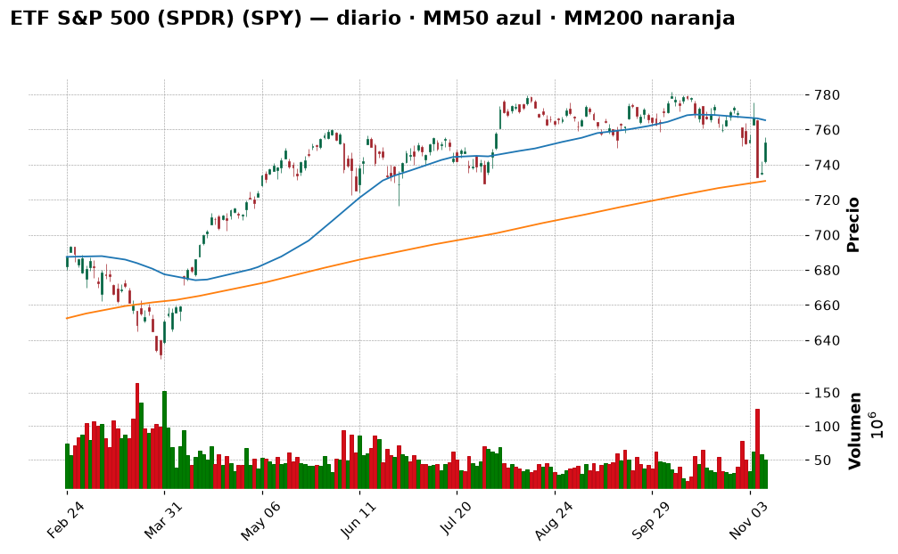
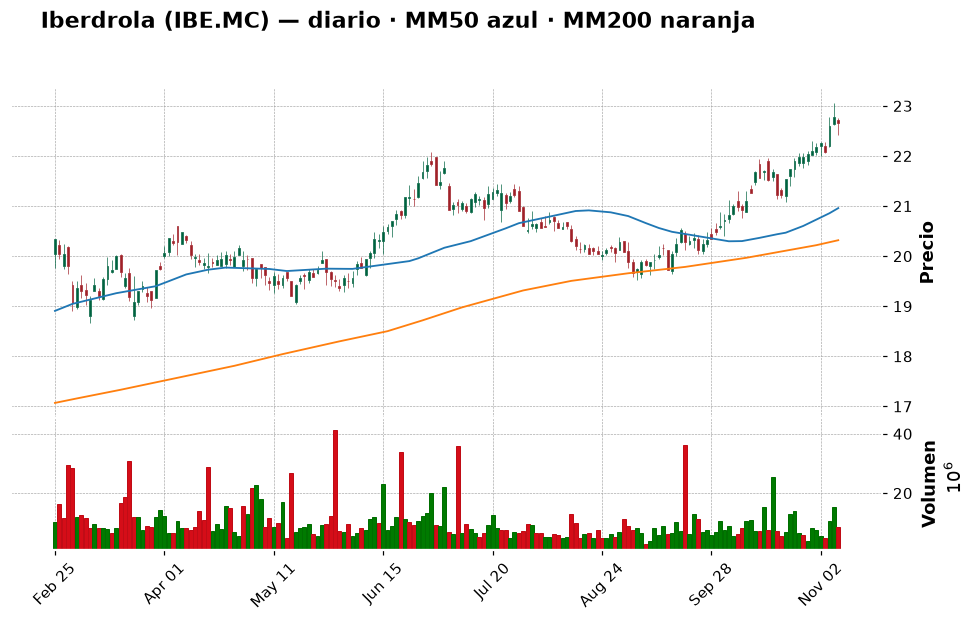
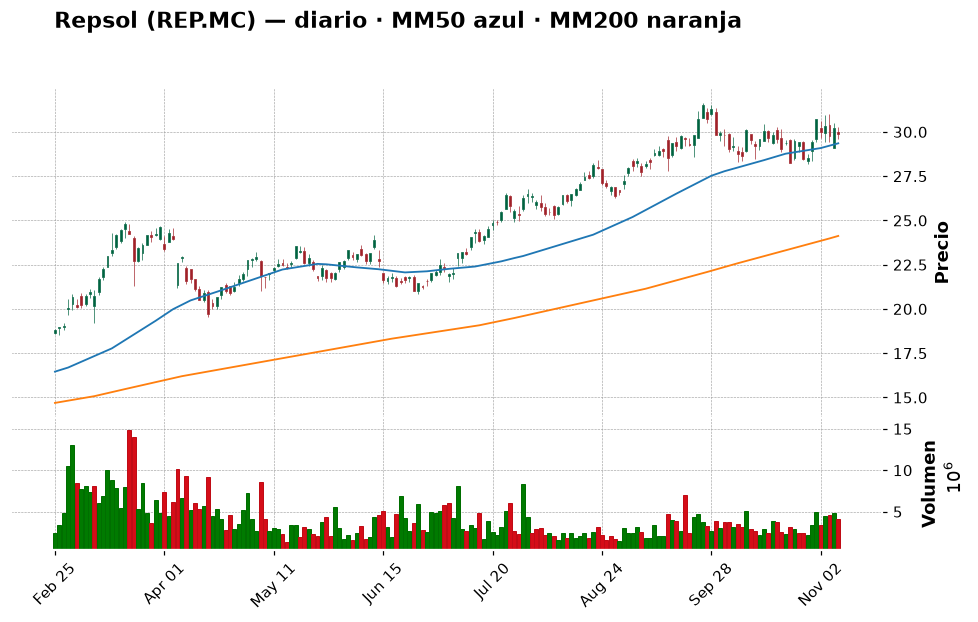
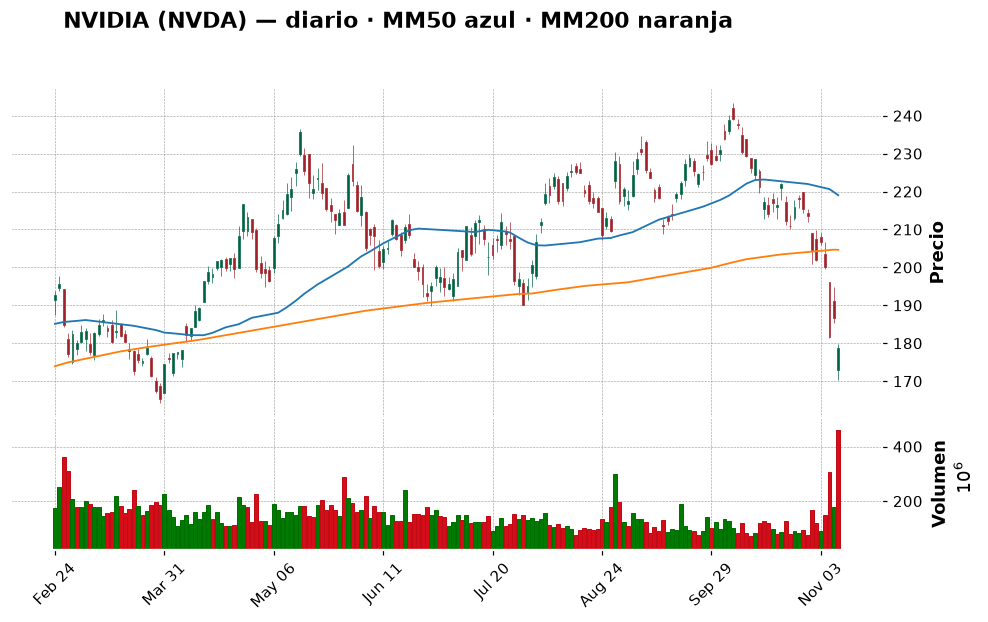
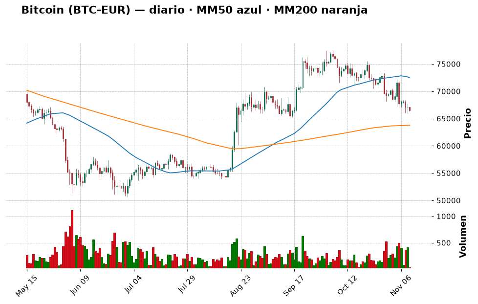
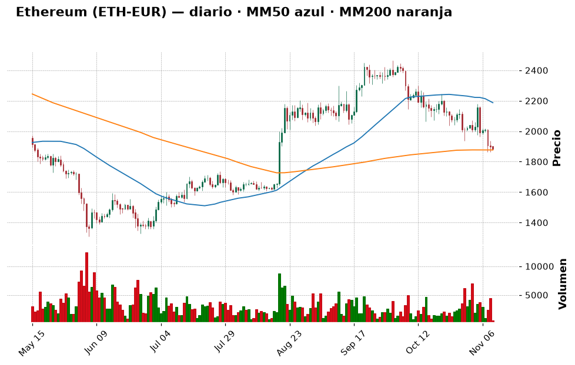
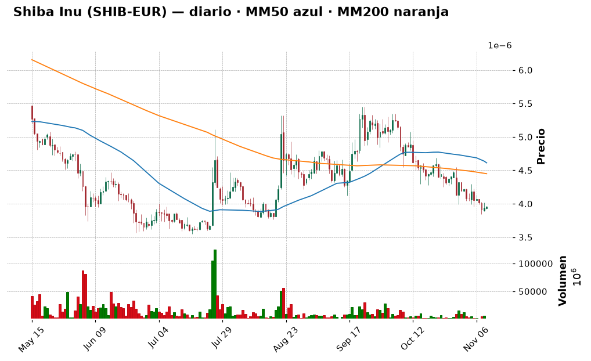

📈 Informe pre-apertura — martes 10 de noviembre de 2026
Generado automáticamente a las 07:55 (hora de Madrid) · Bolsa española abre a las 9:00 · Wall Street a las 15:30 · Cripto: 24/7
Termómetro del día: 🟡 prudencia — ayer hubo un rebote muy fuerte (S&P 500 +2,35 %, Ibex +1,93 %), pero hoy a las 14:30 se publica el IPC de EE. UU. y el mercado ya da un 84 % de probabilidad a una subida de tipos en diciembre.
Lección de hoy: Qué es la inflación (IPC) y por qué mueve la bolsa
1. Lo que tienes que saber hoy
- Rebote de alivio en las bolsas. El S&P 500 subió un +2,35 % ayer (su mejor día desde abril, según Investing.com) y el Ibex un +1,93 %, hasta 19.742 puntos, su mejor nivel en un mes. Lo lideraron los chips (AMD +13 %)... excepto Nvidia, que cayó un −4,3 % por el escándalo de su CEO, que ahora investiga también el FBI.
- Hoy, 14:30 h: el IPC de EE. UU. de octubre. Se espera que los precios suban un 0,3 % en el mes (frente al 0,6 % de septiembre). Si sale más alto, refuerza la subida de tipos de la Fed y la bolsa podría devolver parte del rebote; si sale más bajo, alivio. Es la lección de hoy (sección 10).
- Tu cartera ha cambiado mucho: ahora tienes 9.690 €, de los que 9.419 € (97 %) son liquidez (7.000 € en euros + 2.717 USDC). Eso es una gran ventaja (puedes elegir cuándo y cómo entrar), pero también una tentación: no hay que invertirlo todo de golpe. Hoy te propongo un plan por tramos.
2. ✅ Recomendaciones del día (resumen)
| Activo | Acción | Cuánto (orientativo) | Horizonte | Por qué, en una frase | Confianza |
|---|---|---|---|---|---|
| ETF S&P 500 (SPY o equivalente UCITS) | Comprar | 1.er tramo de ~650 € (≈7 %) después del IPC; objetivo final ~35 % en 6 tramos mensuales | Años (5+) | Es el núcleo que te falta; el índice sigue por encima de su media de 200 sesiones (+3 %) | media |
| Iberdrola (IBE.MC) | Esperar | Hasta 5 % (~480 €) si retrocede a 21–22 € | Años | Gran empresa defensiva, pero "sobrecomprada" (RSI 72) y casi en máximos | media |
| Repsol (REP.MC) | Mantener | No añadir | Años | Ganas un +142 %; el petróleo cae por el posible acuerdo con Irán y eso le resta impulso | media |
| Inditex (ITX.MC) | Mantener | No añadir | Años | +119 % en tu posición, cotiza cerca de máximos de 52 semanas | media |
| Apple (AAPL) | Mantener | No añadir | Años | Tendencia alcista sana (+17 % sobre su MM200), a un 1,3 % de máximos | media |
| NVIDIA (NVDA) | Evitar | 0 € | — | Tendencia rota (−12,7 % bajo MM200), FBI y demanda colectiva: demasiada incertidumbre | media |
| Bitcoin (BTC-EUR) | Comprar | 100 € tras el IPC, desde el USDC; repetir cada mes | Años | Miedo (32/100) y precio justo sobre su soporte de 65.900 €; solo en aportaciones pequeñas | baja |
| Ether (ETH-EUR) | Esperar | 0 € hoy | Años | Está pegado a su MM200 (1.877 €) sin señal de giro | media |
| Shiba Inu (SHIB) | Evitar | No añadir | — | Memecoin, −55 % en un año; no encaja con tu perfil | alta |
Día para arrancar el plan, no para lanzarse: esperar al IPC de las 14:30, comprar el primer tramo del núcleo indexado (y, si quieres, una pequeña cantidad de bitcoin) y dejar el resto de la liquidez para los próximos meses.
3. Agenda del día
| Hora (Madrid) | Evento | Por qué importa |
|---|---|---|
| Durante el día | Intervenciones de Christine Lagarde y Philip Lane (BCE) | Pistas sobre los tipos en Europa |
| 14:30 | IPC de EE. UU. (octubre): previsto +0,3 % mensual (antes 0,6 %); subyacente +0,2 % (antes 0,3 %) | El dato de la semana: decide si la Fed sube tipos en diciembre |
| 18:00 | Subasta de bonos de EE. UU. a 10 años | Si hay poca demanda, suben los tipos de los bonos y eso pesa sobre la bolsa |
| Antes de abrir Wall Street | Resultados previstos de TransDigm, Honda, Sea, On Holding, Petrobras (calendario MarketChameleon a 6-nov, horarios no confirmados) | Pistas de consumo, industria y petróleo |
| Tras el cierre de EE. UU. | CoreWeave (según el mismo calendario) | Termómetro del negocio de "nubes" de IA, clave para el sentimiento tecnológico |
| Mié 11 | Huelga general en España (11-N) | Más ruido político que bursátil |
| Vie 13 | IPP (precios industriales) de EE. UU. | Segunda pista de inflación de la semana |
4. Cómo llegan los mercados
España y Europa
El Ibex 35 cerró el lunes en 19.742,5 (+1,93 %), +4,1 % en la semana y +18,8 % en un año, a un 3 % de su máximo anual (20.356,5). Según Investing.com, subieron con fuerza Solaria (+4,37 %), Indra (+4,16 %) y la banca (Santander +3,5 %, BBVA +2,46 %); Repsol (−1,81 %) fue el único gran valor en rojo por la caída del petróleo. El Euro Stoxx 50 cerró en 6.290,5 (+1,94 %).
Nota técnica: los datos de precios por empresa española que usa este informe son del cierre del viernes 6 (la fuente no tenía aún el del lunes); las cifras del lunes vienen de Investing.com.
Estados Unidos
El S&P 500 cerró en 7.549,9 (+2,35 %) y el Nasdaq en 25.253 (+2,74 %). El índice de miedo VIX bajó un 22 % hasta 19,9. 💡 El VIX mide cuánta volatilidad espera el mercado: por encima de 20–25 hay nervios; por debajo, calma. Esta mañana los futuros del S&P 500 suben ~+0,2 % y los del Nasdaq 100 están planos: todo el mundo espera al IPC.
Nvidia: Trump dijo que el FBI investiga la relación del CEO Jensen Huang con una empresaria china señalada como presunta espía; el consejo dice que confía en él, pero accionistas han presentado una demanda colectiva (Investing.com). La acción cerró en 178,67 $, su mínimo desde abril.
Macro (tipos de interés, inflación, divisas, materias primas)
- Fed: el mercado ve un 84 % de probabilidad de subida de 0,25 puntos en diciembre (CME FedWatch, vía Investing.com), tras un buen dato de empleo. 💡 Subir tipos es como "encarecer el dinero": frena el consumo y la inflación, pero hace menos atractivas las acciones.
- Petróleo Brent: ~91 $ (−1,7 % hoy) tras caer un −4,6 % ayer por las expectativas de un acuerdo diplomático con Irán. Bueno para la inflación; malo para Repsol.
- Euro/dólar: ~1,123. 💡 Ojo: tus 2.717 USDC son dólares digitales. Si el euro sube frente al dólar, valen menos en euros aunque "siempre valgan 1 $".
5. Panorama técnico de la watchlist
💡 Cómo leer esta tabla: la tendencia resume si el precio lleva meses subiendo, bajando o de lado
(comparando el precio con sus medias de 50 y 200 días). El RSI mide de 0 a 100 si las subidas o bajadas
recientes han sido muy fuertes: por encima de 70 se dice "sobrecompra" (quizá ha subido demasiado rápido),
por debajo de 30 "sobreventa". Son pistas, no predicciones.
| Valor | Último cierre | Día | 1 mes | 1 año | Tendencia | RSI | vs MM200 |
|---|---|---|---|---|---|---|---|
| IBEX 35 (^IBEX) | 19.742,5 (9-nov) | +1,93 % | +3,73 % | +18,82 % | ➡️ lateral | 60,1 🟡 | +5,4 % |
| Euro Stoxx 50 | 6.290,45 (9-nov) | +1,94 % | +1,90 % | +10,96 % | ➡️ lateral | 56,2 🟡 | +2,8 % |
| S&P 500 (^GSPC) | 7.549,94 (9-nov) | +2,35 % | −3,35 % | +12,34 % | ➡️ lateral | 45,8 🟡 | +3,0 % |
| Nasdaq Composite | 25.253,14 (9-nov) | +2,74 % | −7,72 % | +9,54 % | ➡️ lateral | 42,4 🟡 | +0,6 % |
| Banco Santander (SAN.MC) | 10,70 (6-nov) | −1,18 % | −10,19 % | +14,90 % | ➡️ lateral | 38,8 🟡 | −5,2 % |
| BBVA (BBVA.MC) | 22,73 (6-nov) | −0,74 % | −1,26 % | +22,57 % | ➡️ lateral | 48,7 🟡 | +5,7 % |
| Inditex (ITX.MC) | 59,04 (6-nov) | −1,70 % | +11,73 % | +18,48 % | ➡️ lateral | 62,8 🟡 | +8,3 % |
| Iberdrola (IBE.MC) | 22,65 (6-nov) | −0,53 % | +7,30 % | +27,79 % | 📈 alcista | 72,1 🔴 | +11,5 % |
| Telefónica (TEF.MC) | 3,38 (6-nov) | −1,83 % | −0,70 % | −7,84 % | 📉 bajista | 50,0 🟡 | −7,3 % |
| Repsol (REP.MC) | 29,90 (6-nov) | −1,03 % | −0,63 % | +77,50 % | 📈 alcista | 52,6 🟡 | +23,9 % |
| Airbus (AIR.PA) | 196,40 (6-nov) | −1,25 % | +4,88 % | −6,92 % | ➡️ lateral | 52,7 🟡 | +4,5 % |
| Apple (AAPL) | 350,69 $ | +2,43 % | +4,17 % | +30,00 % | 📈 alcista | 57,6 🟡 | +17,2 % |
| Microsoft (MSFT) | 545,18 $ | +2,75 % | +1,89 % | +9,67 % | 📈 alcista | 57,5 🟡 | +23,8 % |
| NVIDIA (NVDA) | 178,67 $ | −4,27 % | −22,07 % | −5,00 % | ➡️ lateral | 27,4 🟢 | −12,7 % |
| Amazon (AMZN) | 266,93 $ | +2,94 % | +1,71 % | +9,83 % | ➡️ lateral | 59,2 🟡 | +9,4 % |
| ETF S&P 500 (SPY) | 752,69 $ | +2,37 % | −3,32 % | +12,29 % | ➡️ lateral | 45,8 🟡 | +3,0 % |
| ETF Nasdaq 100 (QQQ) | 679,35 $ | +3,54 % | −9,57 % | +11,06 % | ➡️ lateral | 41,4 🟡 | −0,3 % |
(🟢 = RSI bajo, posible "rebajas"; 🔴 = RSI alto, quizá demasiado rápido; 🟡 = neutral.)
En conjunto: el rebote de ayer devolvió al S&P 500 a un +3 % sobre su media de 200 sesiones: la tendencia de fondo sigue intacta, aunque aún está por debajo de su media de 50 (7.676), así que no ha "recuperado" del todo. El castigo sigue concentrado en Nvidia; Apple y Microsoft están fuertes. En España, Iberdrola sigue "estirada" (RSI 72) y Telefónica es la única en tendencia bajista.
6. Ideas de bolsa: qué haría un experto
ETF S&P 500 (SPY o un equivalente UCITS)Comprar(1.er tramo hoy)

- Qué es: un fondo cotizado que compra las ~500 mayores empresas de EE. UU. de una vez (lo vimos ayer en la lección del ETF).
- Por qué es noticia hoy: ayer el S&P 500 sumó +2,35 % y, según 247 Wall St., ganó 1 billón de dólares de valor en un día. La CEO de Citigroup, Jane Fraser, atribuye la caída previa a los fondos de cobertura y no espera que empeore (247 Wall St.). Hoy decide el IPC.
- Lo que dice el gráfico: el SPY (752,69 $) rebotó desde la zona de su media de 200 sesiones (730,7 $) y está justo debajo de varias resistencias (755,6–760,4 $) y de su MM50 (765,4 $). RSI 45,8: neutral. A un 3,7 % de su máximo de 52 semanas. En lenguaje llano: el suelo de largo plazo aguantó, pero aún tiene "techos" encima.
- Lo positivo: máxima diversificación, coste bajísimo, y tu cartera no tiene núcleo: es lo primero que necesita.
- El riesgo: un IPC caliente puede llevarlo de vuelta a 739–729 $ (soportes); además pesa mucho la tecnología.
- 🧑💼 Recomendación: COMPRAR, en tramos. Tienes 9.419 € de liquidez. Mi plan: que el núcleo indexado llegue a ~35 % de tu patrimonio (~3.400 €) en 6 tramos mensuales de ~570–650 €. El primero, hoy después de las 14:30 (o mañana), una vez conocido el IPC: así no te juegas la entrada a un dato.
- Cuánto y cómo: ~650 € hoy/mañana. 💡 Desde Europa se usa un ETF UCITS que replique el S&P 500 (mejor de acumulación); alternativa aún más diversificada: un ETF del MSCI World (EE. UU. + Europa + Japón…).
- Horizonte: 5 años o más.
- Qué me haría cambiar de opinión: un cierre semanal del SPY por debajo de 729 $ (soporte + MM200): mantendría lo comprado, pero pausaría el siguiente tramo hasta ver estabilidad.
- Qué mirar para entenderlo: el IPC de hoy y si el precio supera la MM50 (línea del gráfico ~765 $): sería la señal de que el rebote es algo más que un alivio de un día.
- Confianza: media
Iberdrola (IBE.MC)Esperar

- Qué es: la mayor eléctrica española (redes y renovables en España, Reino Unido y EE. UU.). Defensiva y con dividendo.
- Por qué es noticia hoy: Morgan Stanley la respalda por la aceleración de sus beneficios (Yahoo Finance). Ayer subió un +1,37 %, hasta 22,96 € (Investing.com), rozando su máximo anual de 23,06 €.
- Lo que dice el gráfico: tendencia alcista clara (+11,5 % sobre la MM200), pero RSI 72 (sobrecompra) y el MACD "empeorando": el impulso se está frenando. No tiene resistencias marcadas encima porque está en máximos.
- Lo positivo: negocio estable y regulado, demanda eléctrica al alza por los centros de datos de IA.
- El riesgo: comprar en máximos con RSI > 70; si la Fed y el BCE endurecen, las eléctricas (con mucha deuda) sufren.
- 🧑💼 Recomendación: ESPERAR. Encaja muy bien en tu perfil, pero a otro precio. Compraría si retrocede hacia 21,9 € (media de 20 sesiones) o 21,1 € (soporte).
- Cuánto y cómo: hasta un 5 % (~480 €), en 2 tramos.
- Horizonte: años.
- Qué me haría cambiar de opinión: un cierre por debajo de 20,3 € (MM200) indicaría tendencia rota.
- Qué mirar para entenderlo: el RSI: cuando baje de 60 sin perder la MM50 (20,96 €), suele ser mejor momento.
- Confianza: media
Repsol (REP.MC)Mantener(la tienes)

- Qué es: la petrolera española (exploración, refino, gasolineras y renovables).
- Por qué es noticia hoy: fue el único gran valor del Ibex en rojo ayer (−1,81 %, a 29,36 €) porque el Brent cayó un −4,6 % por el posible acuerdo con Irán (Investing.com).
- Lo que dice el gráfico: tendencia alcista de fondo (+23,9 % sobre la MM200, +77,5 % en un año), pero de corto plazo se ha aplanado: precio muy pegado a la MM50 (29,36 €) y MACD empeorando. Soportes en 28,3 y 27,8 €.
- 🧑💼 Recomendación: MANTENER. Compraste a 12,37 €: tu posición vale más del doble. El viento a favor (petróleo caro por el conflicto) se está calmando, así que no ampliaría; pero tampoco vendería una empresa sólida con dividendo por un mal día.
- Cuánto y cómo: no añadir.
- Qué me haría cambiar de opinión: un cierre por debajo de 27,8 € (último soporte) con el Brent bajo 90 $: ahí plantearía Reducir.
- Qué mirar para entenderlo: el precio del Brent: Repsol se mueve mucho con él.
- Confianza: media
NVIDIA (NVDA)Evitar

- Qué es: el gran fabricante de chips para IA.
- Por qué es noticia hoy: FBI investigando a su CEO, demanda colectiva de accionistas y un rival (Google) presentando nuevos chips de IA (Decrypt). Mientras, AMD subió un +13 % ayer: el dinero de los chips se va a otras empresas.
- Lo que dice el gráfico: −22 % en un mes, −26,6 % desde máximos, −12,7 % bajo su MM200. RSI 27 (sobreventa) y volumen 3,35 veces la media: mucha gente saliendo. Sin soportes cercanos (el mínimo anual es 164,27 $).
- 🧑💼 Recomendación: EVITAR. La sobreventa puede provocar rebotes, pero para un principiante comprar aquí es intentar coger un cuchillo que cae: el problema ya no es técnico, es de confianza en la dirección.
- Qué me haría cambiar de opinión: que se cierre la investigación sin consecuencias y el precio recupere la MM200 (~204,6 $).
- Qué mirar para entenderlo: compara su gráfico con el de Apple: mismo sector, historias opuestas. Ya tienes exposición indirecta a Nvidia a través del ETF del S&P 500.
- Confianza: media
7. ₿ Criptomonedas
💡 Las criptomonedas cotizan 24 horas, 7 días a la semana: los precios son de esta mañana (en euros).
Son mucho más volátiles que las acciones: caídas del 50 % o más han ocurrido varias veces.
Sentimiento: Fear & Greed 32/100 (miedo; ayer 29, hace una semana 26) · Capitalización total 2,61 billones $ (+0,5 % 24 h, −45,9 % bajo su máximo histórico de octubre de 2025) · Dominancia de Bitcoin 57,6 %.
El miedo se suaviza un poco, pero el mercado sigue débil: CoinDesk dice que bitcoin afronta el "examen" del IPC y que un dato suave quizá solo dé un alivio breve ("bitcoin necesita compras reales, no un golpe de suerte").
Radar Coinbase (408 monedas comprables · hoy suben 281 y bajan 79 · en 7 días suben 84 y bajan 276):
- Mayores por capitalización (7 d): BTC −2,7 %, ETH −6,0 %, BNB −0,6 %, XRP −12,0 %, SOL −6,5 %, DOGE −5,3 %.
- Más suben (7 d, top 100): INJ (+16,1 %), PEPE (+12,9 %, memecoin), ARB (+12,1 %), RENDER (+6,8 %), PAXG (+5 %, oro tokenizado) · Más bajan: BCH (−13,1 %), WLD (−12,4 %), XRP (−12 %), FIL (−11,3 %), HYPE (−10,7 %).
Hoy rebota casi todo (alivio de 24 h), pero la semana sigue en rojo para 3 de cada 4 monedas: las subidas del radar son casos aislados sin una noticia sólida detrás. No hay nada que merezca perseguirse.
| Moneda | Ranking | Precio (€) | 24 h | 7 días | 1 mes | 1 año | Tendencia | RSI | vs MM200 |
|---|---|---|---|---|---|---|---|---|---|
| Bitcoin (BTC) | #1 | 66.436 | −0,98 % | −3,77 % | −11,06 % | −27,53 % | ➡️ lateral | 35,2 | +4,2 % |
| Ether (ETH) | #2 | 1.883,97 | −0,81 % | −7,08 % | −16,71 % | −38,94 % | ➡️ lateral | 32,7 | +0,4 % |
| BNB (BNB) | #4 | 613,10 | −0,34 % | −1,32 % | −8,60 % | −30,62 % | ➡️ lateral | 40,3 | +4,6 % |
| XRP (XRP) | #6 | 0,9798 | +0,18 % | −13,95 % | −22,10 % | −55,17 % | ➡️ lateral | 27,0 | −10,9 % |
| Solana (SOL) | #7 | 76,57 | −0,82 % | −7,43 % | −22,86 % | −47,09 % | ➡️ lateral | 26,9 | −1,4 % |
| Shiba Inu (SHIB) | #42 | 0,00000396 | +0,51 % | −2,94 % | −19,02 % | −54,90 % | ➡️ lateral | 35,9 | −11,0 % |
Noticias que importan:
- El minero MARA vendió 13.597 BTC (~1.100 M$) en seis semanas y planea seguir vendiendo para financiar infraestructura de IA (CoinDesk). Más oferta en el mercado = presión bajista.
- Los ETF de bitcoin han perdido 1.280 M$ y las apuestas de subida de tipos de la Fed llegan al 84 % (BeInCrypto).
- Hackers norcoreanos crean memecoins para blanquear lo robado en el hackeo de Binance (Elliptic, vía Cointelegraph): otro motivo para alejarse de las memecoins.
- El Banco de Rusia aprueba el comercio de cripto a partir del 17 de noviembre (Yahoo Finance).
Bitcoin (BTC)Comprar(poco y en tramos)

- Qué es: la primera y mayor criptomoneda, con oferta limitada a 21 millones.
- Lo que dice el gráfico: 66.436 €, justo encima de su soporte de 65.898 € y un 4,2 % por encima de la MM200 (63.773 €), pero un 8,3 % bajo la MM50 y con MACD empeorando: la tendencia de corto es bajista, la de fondo aún aguanta. Un 28,6 % bajo su máximo anual.
- 🧑💼 Recomendación: COMPRAR, solo 100 € y en modo aportación periódica. Hay miedo (32/100) y estamos sobre un soporte: históricamente, comprar poco a poco con miedo ha salido mejor que comprar con euforia. Pero con ventas de mineros y salidas de ETF, no hay prisa.
- Cuánto y cómo: 100 € tras el IPC, usando parte de tus USDC (par BTC-EUR o BTC-USDC en Coinbase), y repetir ~100 € al mes. Tu cripto pesa un 0,8 %; aunque tu tope es 25 % (margen de 3.124 €), para un perfil moderado te sugiero no pasar del 5–10 %.
- Qué me haría cambiar de opinión: un cierre diario por debajo de 64.918 € (segundo soporte) abriría la puerta hacia 54.000 €: pausaría las compras.
- El riesgo: bitcoin cae un −27,5 % en un año; podría caer bastante más.
- Confianza: baja
Ether (ETH)Esperar

- Qué es: la moneda de Ethereum, la red de los "contratos inteligentes".
- Lo que dice el gráfico: 1.884 €, prácticamente sobre su MM200 (1.877 €), −13,9 % bajo la MM50, RSI 32,7 y MACD empeorando. El siguiente soporte está lejos (1.607 €).
- 🧑💼 Recomendación: ESPERAR. Está en una "frontera": si la MM200 aguanta, podría ser buena entrada; si se pierde, hay espacio hasta 1.600 €. Esperaría a ver unos días de cierres por encima de 1.877 € o a una recuperación de 2.178 €.
- Qué me haría cambiar de opinión: varios cierres por encima de la MM200 con el RSI subiendo de 40 → primer tramo pequeño (50 €).
- El riesgo: −39 % en un año; más débil que bitcoin en esta fase.
- Confianza: media
Shiba Inu (SHIB)Evitar

- Qué es: una "memecoin" (moneda nacida como broma, sin utilidad clara).
- Lo que dice el gráfico: −55 % en un año, −11 % bajo su MM200, tendencia lateral sin suelo claro.
- 🧑💼 Recomendación: EVITAR (no añadir). Tu posición vale ~4 €: venderla apenas cambia nada (y quizá cueste comisión); tómala como "lección pagada". No pongas más dinero.
- El riesgo: que pierda casi todo su valor.
- Confianza: alta
8. 💼 Tu cartera
Valor total: 9.689,56 € · Invertido: 270,34 € · Ganancia/pérdida no realizada: +77,99 € (+40,6 %) · Realizada: 0 €
Reparto: acciones 2,0 % · ETF 0 % · cripto 0,8 % · liquidez 97,2 % · Cripto vs tope: 0,8 % de 25 % ✅ dentro
Liquidez disponible: 9.419,22 € (97,2 %: 7.000 € en euros + 2.717 USDC ≈ 2.419 €) · Próxima aportación: 200 € el 2026-12-01 (en 21 días)
| Activo | Cantidad | Precio medio | Precio actual | Valor (€) | G/P | Peso | Acción recomendada |
|---|---|---|---|---|---|---|---|
| Liquidez en euros (otro bróker) | 7.000 € | — | — | 7.000,00 | — | 72,2 % | Invertir en tramos según el plan de abajo |
| USDC (Coinbase) | 2.717 | 1 $ | 1 $ | 2.419,22 | 0 % | 25,0 % | Usar para las compras cripto; valorar pasar parte a euros |
| Bitcoin (BTC) | 0,00113223 | 74.000 € | 66.426 € | 75,21 | −10,2 % | 0,8 % | Comprar (100 €) — promediar a la baja con calma |
| Repsol (REP.MC) | 2 | 12,37 € | 29,90 € | 59,80 | +141,7 % | 0,6 % | Mantener — buena posición, sin ampliar |
| Inditex (ITX.MC) | 1 | 26,94 € | 59,04 € | 59,04 | +119,2 % | 0,6 % | Mantener — cerca de máximos |
| Apple (AAPL) | 0,15 | 171,99 $ | 350,69 $ | 46,84 | +103,9 % | 0,5 % | Mantener — tendencia alcista sana |
| Solaria (SLR.MC) | 1 | 14,99 € | 16,15 € | 16,15 | +7,7 % | 0,2 % | Mantener — no añadir (renovable pequeña y volátil) |
| Oryzon (ORY.MC) | 4 | 3,23 € | 2,33 € | 9,33 | −27,8 % | 0,1 % | Mantener — posición mínima; venderla costaría más en comisión que el riesgo que quita |
| Shiba Inu (SHIB) | 1.000.000 | 0,000006 € | 0,00000397 € | 3,97 | −33,8 % | 0,04 % | Evitar — no añadir |
Tus acciones antiguas lo han hecho muy bien (Repsol, Inditex y Apple más que duplicadas), pero son posiciones muy pequeñas; lo que de verdad decide tu futuro es cómo inviertes los 9.419 € de liquidez. Un experto no lo metería todo de golpe ni lo dejaría todo parado. Mi propuesta orientativa para los próximos 6 meses (tu cartera.csv no tiene errores ✅):
| Destino | Objetivo | Cómo | Por qué |
|---|---|---|---|
| Núcleo: ETF S&P 500 o MSCI World | ~35 % (~3.400 €) | 6 tramos de ~570–650 €, 1.º hoy/mañana | Base diversificada y barata |
| Grandes empresas (Iberdrola, banca, Apple…) | ~10–15 % (~1.000–1.400 €) | Solo en buenos precios (p. ej. Iberdrola a 21–22 €), máx. 5 % cada una | Satélites de calidad y dividendo |
| Cripto (BTC sobre todo, algo de ETH) | ~5 % (~500 €) | ~100 € al mes desde el USDC | Pequeña parte con potencial, sin poner en riesgo el total |
| Liquidez / colchón | ~45 % restante | Depósito o fondo monetario mientras tanto | Colchón para imprevistos (3–6 meses de gastos) y "munición" si hay caídas |
💡 El USDC es un dólar digital: si el euro sube un 5 % frente al dólar, tus 2.717 USDC valdrán un 5 % menos en euros. Si no lo vas a usar para cripto, convertir una parte a euros elimina ese riesgo. Recuerda apuntar cada compra en cartera.csv para que el informe calcule bien tus pesos.
9. Análisis de riesgo
| Riesgo | Nivel | Explicación |
|---|---|---|
| IPC de EE. UU. por encima de lo previsto | 🔴 | Reforzaría la subida de tipos de diciembre y podría borrar el rebote de ayer |
| Caso Nvidia / sentimiento IA | 🟡 | Nvidia pesa mucho en el S&P 500 y el Nasdaq; más noticias negativas arrastran al índice |
| Subasta de bonos a 10 años | 🟡 | Si sube mucho la rentabilidad del bono, presiona a la bolsa |
| Ventas de mineros y salidas de ETF de bitcoin | 🟡 | Más oferta y menos demanda en cripto |
| Petróleo e Irán | 🟢 | Un acuerdo bajaría la inflación (bueno), aunque resta a Repsol |
| Política en España (huelga general 11-N, campaña) | 🟢 | Ruido; poco impacto bursátil histórico |
Qué podría salir mal hoy: que el IPC salga en 0,5 % o más. Entonces la bolsa podría caer un 1–2 % y bitcoin perder los 65.900 €. En ese caso, compra igualmente el primer tramo del ETF (para eso son los tramos: si baja, el siguiente sale más barato), pero deja la compra de bitcoin para la próxima semana.
10. 🎓 Aprende con el informe de hoy: Qué es la inflación (IPC) y por qué mueve la bolsa
- Qué es (en una frase): la inflación es la subida general de los precios; el IPC (Índice de Precios al Consumo) la mide comparando lo que cuesta una "cesta" típica de productos (comida, alquiler, gasolina…) de un mes a otro o de un año a otro.
- Ejemplo con números: si tu compra mensual costaba 100 € hace un año y hoy cuesta 104 €, la inflación anual es del 4 %. Con tus 7.000 € parados en euros, al 4 % de inflación pierdes unos 280 € de poder de compra en un año aunque el saldo no cambie. Hoy se espera que los precios en EE. UU. suban un 0,3 % en un mes (en septiembre fueron un 0,6 %).
- Dónde lo has visto hoy: en la agenda (14:30), en el termómetro, en la Fed (sección 4) y en el análisis de riesgo.
- Por qué te importa como inversor: la cadena es así → inflación alta → el banco central sube tipos → el dinero se encarece → las empresas ganan menos y los bonos/depósitos compiten con las acciones → la bolsa suele bajar. Y al revés. Por eso un solo dato mensual puede mover el mercado un 1–2 % en minutos. También es la razón por la que tener todo en liquidez no es "no arriesgar": la inflación es un riesgo silencioso.
- Error típico de principiante: reaccionar comprando o vendiendo en los minutos siguientes al dato. Los primeros movimientos son muy bruscos y a menudo se dan la vuelta. Quien invierte a años debería mirar la tendencia de la inflación durante meses, no un dato suelto.
- Pregunta para pensar: si el IPC de hoy sale más bajo de lo esperado, ¿qué crees que haría la probabilidad de subida de tipos de la Fed y, por tanto, la bolsa?
11. Consejo del día para inversores principiantes
Tener mucha liquidez es una oportunidad, no una urgencia. Al ver que el mercado rebota un 2 % en un día da la sensación de que "se escapa el tren" (eso se llama FOMO, miedo a quedarse fuera). Un plan escrito de tramos mensuales te protege de dos errores a la vez: meterlo todo justo antes de una caída y no invertir nunca por esperar el "momento perfecto". Decide hoy tu plan, apúntalo y síguelo, pase lo que pase con el IPC.
12. Glosario
- Inflación / IPC: subida general de precios / índice que la mide.
- IPC subyacente: el IPC sin energía ni alimentos frescos (los más volátiles); muestra mejor la tendencia de fondo.
- Tipos de interés: el "precio del dinero" que fija el banco central (Fed en EE. UU., BCE en Europa).
- VIX: índice que mide la volatilidad esperada en la bolsa de EE. UU.; "índice del miedo".
- Media móvil (MM50, MM200): precio medio de las últimas 50 o 200 sesiones; ayuda a ver la tendencia.
- RSI: indicador de 0 a 100 que mide la fuerza de subidas/bajadas recientes (>70 sobrecompra, <30 sobreventa).
- MACD: indicador que compara dos medias para ver si el impulso del precio mejora o empeora.
- Soporte / resistencia: niveles donde el precio suele frenar su caída ("suelo") o su subida ("techo").
- ETF UCITS: fondo cotizado con la normativa europea, el que puede comprar un inversor en España.
- Stablecoin (USDC): criptomoneda que intenta valer siempre 1 dólar.
- Memecoin: criptomoneda nacida como broma o moda, sin utilidad clara; muy arriesgada.
- Tramos (DCA): invertir una cantidad en varias compras espaciadas en el tiempo en vez de todo de golpe.
- FOMO: "miedo a perderse algo"; impulso de comprar porque todo sube.
13. Fuentes
- Investing.com — La bolsa hoy: IBEX 35, Euro Dólar, IPC EEUU, petróleo y subasta de bonos
- Investing.com — U.S. stock futures steady after tech-led rebound; CPI in focus
- Investing.com — Trump says FBI probing Nvidia CEO Huang as China controversy deepens
- Investing.com — US consumer prices expected to have risen at slower pace in October
- CoinDesk — Bitcoin faces U.S. CPI test as analysts warn inflation relief may not be enough
- CoinDesk — Bitcoin miner MARA sold 13,597 BTC for $1.1 billion in six weeks
- BeInCrypto — Fed Hike Odds Hit 84% After Bitcoin ETFs Lose $1.28 Billion
- Cointelegraph — North Korean hackers create memecoins to launder funds from Binance hack
- Yahoo Finance — Morgan Stanley backs Iberdrola on accelerating earnings growth
- 247 Wall St. — Risk-On: S&P 500 Surges Out of the Gate, Adds $1 Trillion in Market Value · Citigroup's Jane Fraser Says Hedge Funds Drove the Sell-Off
- Decrypt — Google Takes Aim at Nvidia With New AI Chips
- MarketChameleon — calendario de resultados (datos a 6-nov, horarios no confirmados)
- Precios e indicadores de bolsa: Yahoo Finance (velas diarias, último cierre disponible)
- Cripto: Coinbase (universo de monedas y velas diarias) · Coinpaprika (datos de mercado) · Fear & Greed (alternative.me)
- Fuentes que fallaron hoy: Expansión (bloqueada para lectura automática). Por tiempo no se consultaron el resto de páginas de
sources.md(Yahoo Finance futuros/divisas/Brent, BCE, Fed, CoinDesk Markets, alternative.me); sus datos clave se han tomado de los artículos citados y de los JSON. Los datos de precios de empresas españolas son del viernes 6-nov.
Respuesta a la pregunta del día: si el IPC sale más bajo de lo esperado, el mercado pensaría que la inflación se está frenando, así que bajaría la probabilidad de que la Fed suba tipos en diciembre. Dinero menos caro en el futuro suele ser bueno para la bolsa (y para bitcoin), así que lo normal sería ver subidas, sobre todo en tecnología. Ojo: "lo normal" no es "seguro"; a veces el mercado ya lo había descontado y reacciona poco.
Este informe lo genera automáticamente una IA a partir de noticias y datos de precios públicos y de los
movimientos que has registrado. Las recomendaciones son la opinión razonada de un modelo, no
asesoramiento financiero personalizado ni regulado: no conoce toda tu situación (ingresos, deudas,
objetivos, fiscalidad). El análisis técnico es orientativo y no predice el futuro. Invertir conlleva riesgo
de pérdida, y en criptomonedas ese riesgo es muy alto. Decide tú, contrasta la información y, si lo
necesitas, consulta con un profesional.